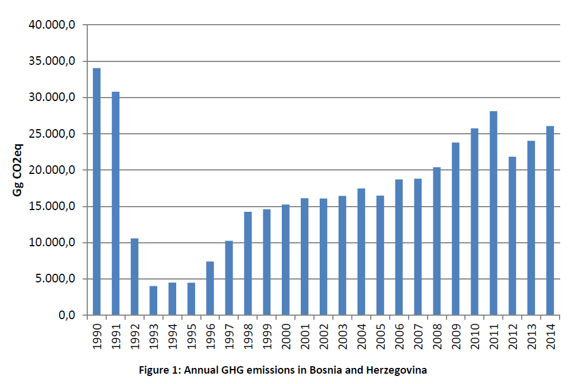
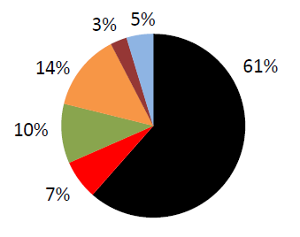

FOR THE PERIOD 2020-2030
Climate change is one of the greatest challenges that humanity is facing today, as it affects all aspects of the environment and the economy and threatens the sustainable development of the society.
Bosnia and Herzegovina, as a country where the negative effects of climate change are already visible, appreciates the importance of addressing this challenge and is making every effort to render these initiatives successful.
GHG emissions in Bosnia and Herzegovina in 2014, which is at the same time the last year for which the inventory was made up to now, amounted to 26,062 Gg CO2eq. GHG emissions in 2014 amounted to about 7.38 tons of CO2eq per capita, which is about 15% less than the average of EU countries (EU28) for the same year. GHG emissions per unit of GDP for BiH amounted to 1.87 kg CO2eq per euro in 2014, while the EU average was 0.39 kg CO2eq per euro, which indicates inefficient use of resources, primarily energy.
The key challenge in the process of climate change mitigation is to use the transition to a low-carbon (low-emission) economy for achieving the sustainable economic development and social cohesion goals, while taking account of the existing structure of the economy and the time required for its transition. Through investing in GHG emission reduction projects and programmes, there is a great potential for economic growth, employment opportunities and business risk reduction.
The present document Nationally Determined Contribution (NDC) of Bosnia and Herzegovina was prepared in accordance with the Decision 1/CP.21 of the Paris Agreement and it is a revision of the first Intended Nationally Determined Contribution – INDC submitted by Bosnia and Herzegovina in October 2015. Compared to the INDC, the NDC of Bosnia and Herzegovina includes a section on climate change adaptation and the updated section related to contribution to climate change mitigation which now includes more ambitious targets for reducing GHG emissions.
| ADAPTATION TO CLIMATE CHANGE | |
|---|---|
| Need to include climate change adaptation |
Bosnia and Herzegovina is particularly vulnerable to climate change due to its geographical position, economic importance of the agriculture, water management and forestry sectors, as well as due to its limited capacity for climate change adaptation. According to the Climate Risk Index data for BiH taken from the Global Climate Risk Index, in 2014 BiH ranked third in terms of total losses and damage caused by climate change. Therefore, it is of the utmost importance to determine the impact of climate change on Bosnia and Herzegovina and identify priority action measures. |
| Climate change effects |
The first three National Communications on climate change under the UNFCCC, as well as numerous scientific papers, have clearly indicated that the climate, and especially climate extremes, have changed in Bosnia and Herzegovina in the course of the last few decades. In the last ten years alone, six years have been very dry to extremely dry, and five years have been marked by extreme floods. During the period 2009-2019 almost all years were characterised by extreme weather conditions: floods in 2009, 2010, 2014, 2018 and 2019, drought and heat waves in 2011, 2012, 2013, 2015, 2016 and 2017, cold waves in early 2012, strong wind in mid-2012 and late 2017, and extremely large number of hail days in 2018. Along with the increase in temporal variations in precipitation distribution, the problems related to the pronounced spatial variations are exacerbated – the places lacking water are actually those with the greatest water needs, valleys with the greatest land potential for intensive agriculture, with the necessary irrigation and with the highest population density. |
| The most vulnerable sectors |
The sectors that are most vulnerable to climate change in Bosnia and Herzegovina include: agriculture, water resources, forestry, energy, tourism, biodiversity and sensitive ecosystems, and human health. The most vulnerable sectors are agriculture and water resources management. The biggest impacts are reflected in the risks of drought, floods and fires. Drought has been one of the most significant threats to Bosnia and Herzegovina in the past period, causing great economic, environmental and social costs. Extremely high temperatures and heat stress are some of the biggest problems in agriculture, especially in the sub-Mediterranean part of Bosnia and Herzegovina. This problem has been particularly present in the last two decades, with the major impact on fruit, vegetable and wine production. In 2012, Bosnia and Herzegovina experienced a prolonged period of severe drought, causing losses in agricultural production of about BAM 1.65 billion1 , grain and vegetable yields were reduced by about 70%, and energy production was reduced by about 25%.2 Forecasted changes in precipitation amounts and air temperature will negatively affect the current water resources management system in Bosnia and Herzegovina. Changes can be expected in terms of time of occurrence, frequency and intensity of extreme events – floods and droughts. The largest increase in air temperature is predicted during the growing season (June, July and August), and a slightly milder increase during March, April and May, which will result in increased evapotranspiration and more pronounced extreme minimums of water levels on watercourses. This will result in reduction in the availability of water resources in the growing season when the needs are the highest, in terms of water quantity, but also quality, because in low water periods the potential and real danger of significant degradation of water quality increases. A significant increase in air temperature during the winter season (December, January and February) will result in a decrease in snowfall, that is, a decrease in flow in most watercourses during spring months. On the other hand, the expected more frequent precipitation of higher intensity will cause more intense runoff, often followed by floods. According to the data from the document Recovery Needs Assessment in BiH3, which was developed with the help of the EU, UN and WB, it is estimated that the total consequences of major floods that occurred in May 2014 in Bosnia and Herzegovina amount to BAM 3,982 million, that is, BAM 2,033 million in the Federation of Bosnia and Herzegovina, BAM 1,893 million in Republika Srpska and BAM 58 million in the Brčko District of Bosnia and Herzegovina. |
| Potential future impacts and needs |
The territory of Bosnia and Herzegovina has already been affected by many climate extremes: intense precipitation, heat waves, extremely high temperatures, droughts, floods, stormy winds, etc. Under the RCP8.5 climate scenario, an increase in the intensity and frequency of these extremes can be expected in the decades to come. Accordingly, it is important to plan in detail the adaptation measures (short-term, medium-term and long-term), the method of financing the implementation of the proposed measures and the institutions for their implementation. It is necessary to improve the processes of monitoring, analysis and modelling of climate data, and to strengthen professional and institutional capacities. |
| Climate change adaptation planning |
In response to the adverse consequences of climate change, in 2013 Bosnia and Herzegovina adopted its first Climate Change Adaptation and Low-Emission Development Strategy, the strategic objective of which was to increase resilience of Bosnia and Herzegovina to climate variability and climate change, while preventing environmental degradation, as well as gradual reduction of greenhouse gas emissions. New Climate Change Adaptation and Low-Emission Development Strategy of Bosnia and Herzegovina for the period 2020-2030 is in the completion stage. The objective of the Strategy in the field of climate change adaptation is to increase the resilience of Bosnia and Herzegovina to climate variability and climate change, thus ensuring economic progress. |
| Monitoring and evaluation |
Monitoring the implementation of climate change adaptation measures will be combined with the process of regular updating of priorities and sectoral adaptation plans and programmes of Bosnia and Herzegovina. The preparation of updated plans and programmes will be based on the assessment of the implementation of previous plans and programmes. In this round of the NDC, a framework for monitoring and evaluation of activities and processes of adaptation to climate change will be developed, with defined indicators and manners of reporting. |
| CONTRIBUTION TO CLIMATE CHANGE MITIGATION | |
|---|---|
| Long-term goal of GHG emission reduction |
Reduction of GHG emissions compared to the baseline year |
| Timeframe |
2020-2030 and by 2050 |
| Coverage |
In setting GHG emission reduction target, the following sectors are encompassed:
|
| Area (including GHG) |
NDC includes information on the following GHG gases:
|
| Baseline year |
2014 (for the purpose of comparison with INDC, reduction targets are given in relation to 1990 as well) |
Contribution (emission reduction level) |
The unconditional GHG emissions reduction target for 2030 is 12.8% compared to 2014 or 33.2% compared to 1990. The conditional target (with more intensive international assistance for the decarbonisation of mining areas) for 2030 is 17.5% compared to 2014 or 36.8% compared to 1990. GHG emissions reduction target for 2050 is 50.0% (unconditional) and 55.0% (conditional) compared to 2014, that is, 61.7% (unconditional) and 65.6% (conditional) compared to modelling 1990. In the case of conditional target, more intensive international assistance is expected for faster decarbonisation of the power sector with an emphasis on fair transition of mining areas. Not all of these targets include GHG sinks. In the forestry sector, measures are planned to increase the sinks by 93 GgCO2eq until 2030. |
| Methodological approach used to measure and verify anthropogenic GHG emissions and their absorption |
The methodological approach is based on the use of the following data and tools:
(Long-range Energy Alternatives Planning System) Baseline year 2014: 26,062.18 GgCO2eq (without sinks) Year 1990: 34,043.49 GgCO2eq (without sinks) Baseline year 2014: 19,664.51 GgCO2eq (with sinks) Year 1990: 26,619.90 GgCO2eq (with sinks) |
| Fairness and ambition based on conditions in Bosnia and Herzegovina |
Meeting the defined targets includes the following:
|
| Planning process |
NDC is based on the strategic documents currently in place. When it comes to implementation, the existing institutional framework is used along with its strengthening. |
Monitoring and reporting |
Based on the principles of the Monitoring Mechanism Regulation (MMR) using the existing institutional framework along with its strengthening. |
| International market mechanisms |
Out of the mechanisms in place, potentially in the EU ETS for achieving the conditional target. In future mechanisms depending on the EU accession process and the market mechanism conditions. |
As a member of the UNFCCC, BiH is required to report on GHG emissions. Through the development of the first three National Communications and two Biennial Update Reports on GHG emissions, inventories of emissions from 1990 to 2014 were made. The inventories were made by applying the 1996 IPCC methodology. The development of inventories for 2015 and 2016 is in progress by applying the 2006 IPCC methodology, and their completion is planned for the first quarter of 2021. With this in mind, information on GHG emissions is much more reliable compared to the period when the INDC was produced, and, in addition, the national capacities for their monitoring have been improved. This enabled more reliable emission projections and thus the definition of the targets arising from international treaties. Error! Reference source not found. shows the GHG emission trend from 1990 to 2014.

The highest emissions were recorded in 1990 and they amounted to 34,040GgCO2eq. The emissions were significantly reduced during the 1992-1995 period, after which they started increasing. In 2001, they amounted to 12,030GgCO2eq, which is just over one third compared to 1990. Subsequently, primarily due to the growth of emissions in the energy sector, total emissions exceeded 20,000GgCO2eq (in 2008). Emissions from other sectors were more than halved between 1990 and 2001, due to a reduction of more than 80% in industrial emissions and 50% in the agricultural sector. The highest emissions after 1990 were recorded in 2011 and they amounted to 28,107GgCO2eq, which is about 83% of 1990 emissions. The rise in emissions in 2011 primarily occurred due to increased power generation from coal-fired power plants. Year 2012 saw a significant drop in emissions as a result of a smaller share of thermal power plants in power generation. Emissions in 2014, the last year for which the inventory has been made to date, amounted to 26,062GgCO2eq, which is about 23.5% less compared to 1990.
Based on the analysis of emissions per capita, emissions in 2010 almost reached the levels of emissions per capita in 1990 (5.18 tons of CO2eq per capita annually in 2008), however they are still among the lowest values in Europe. In 2014, emissions per capita amounted to about 7.38 tons of CO2eq, which is about 15% less than the EU average. However, if a comparison is made in relation to gross domestic product, emissions in BiH are nearly five times higher than in the EU. GHG emissions per unit of GDP for BiH amounted to 1.87 kg CO2eq per euro in 2014, while the EU average was 0.39 kg CO2eq per euro. These statistical data illustrate the economic and social situation of BiH, which is trapped in poverty, with relatively low GHG emissions, but even lower per capita gross domestic product, which indicates inefficient use of resources, primarily energy.
Error! Reference source not found. shows the shares of individual sectors in total GHG emissions in 1990 and 2014.
Share of GHG emissions by sectors in 1990

Share of GHG emissions by sectors in 2014
Figure 2: Shares of GHG emissions by sectors
The diagram shows the increase of the share of energy generation in total GHG emissions from 61% (in 1990) to 64% (in 2014), although emissions in this sector are lower in 2014 by about 5,500 GgCO2eq compared to 1990. There is a significant increase in the share of transport, from 7% to 12%. The share of agriculture records a significant drop, while the share of industry remained pretty much the same. The share of fugitive emissions from fuels dropped from 5% in 1990 to 2% in 2014. It is important to emphasise that this is the share in emissions of all greenhouse gases, and not just carbon dioxide emissions.
Creating a GHG emissions inventory resulted in the increased level of data reliability. Verification of calculations was made in terms of the procedures to be followed in data collection and inventory development.
The quantity of emissions from 1990 has not yet been reached. It is evident that emission levels have started to rise, due to increased industrial activities, and generally they have an increasing trend.
When setting GHG emission reduction targets, it should be taken into account that BiH is a signatory to the Paris Agreement and a member of the Energy Community. Under the Paris Agreement, emission reduction targets are set on a voluntary basis. This means that it is up to each country to consider its own situation and assess which level of emission reductions is in line with its sustainable development. Thereby, it can be expected for the level of international assistance on reducing GHG emissions to be commensurate with the ambition of the targets. As a member of the Energy Community, Bosnia and Herzegovina has an obligation to harmonise its energy sector with the acquis communautaire and to base its climate targets on those of the EU, but it also has the possibility to set its own target with an adequate explanation of the ambitiousness of such target. When setting the target for reducing GHG emissions by 2030, the commitments of BiH deriving from both treaties/agreements were taken into account.
In setting GHG emission reduction target, the following sectors are covered: power sector, district heating, building, transport, industry, agriculture, forestry (through increased sinks), waste and the cross-cutting5 sector. The following GHGs were considered: carbon dioxide, methane, nitrous oxide and hydrofluorocarbons. The period for which the reduction target is defined is by 2030 and by 2050, with the indication of the target for 2025.
In consultations with the Secretariat of the Energy Community, year 2014 was selected as the baseline year. This is the last year for which there is the official inventory of GHG emissions. It should be noted that in that year, BiH suffered catastrophic floods, which was reflected in the level of economic activities and indirectly caused certain reduction in GHG emissions. In order to be able to compare the reduction target with the INDC targets, the target is also expressed in relation to the 1990 emissions.
Based on consultations with key stakeholders, the GHG emissions reduction target has been set such to leave room for the construction of planned substitute/new coal-fired power plants with a total capacity of 1,050 MW6 until 2030. This is 350 MW more than envisaged by the moderate renewable scenario in the Framework Energy Strategy of BiH until 2035; however, it is less compared to the other three scenarios from the same Strategy. Compared to the scenario of the Entity working groups, the installed capacity of the new coal-fired power plants envisaged by this document is lower by 1,600 MW, and compared to the scenario of optimised/least-cost indicative plan, it is lower by 400 MW. Construction of substitute thermal power plants is justified by the need for gradual decarbonisation of mining areas. It takes much more than 10 years to create a sufficient number of job posts in noncoal-related activities. The option with 750 MW of substitute and new coal-fired power plants was also analysed, which implies more intensive international assistance on decarbonisation with an additional focus on assistance in fair transition of mining areas. This option implies the construction of another thermal power plant next to block 7 in the Tuzla thermal power plant. Meeting the targets in both options is dependent on receiving international assistance and participation in international financial mechanisms for reducing GHG emissions.
The unconditional target of reducing GHG emissions for 2030 is 12.8% (excluding GHG sinks) compared to 2014. The conditional target (with more intensive international assistance, especially for the fair transition of mining areas) for 2030 is 17.7% (excluding GHG sinks) compared to 2014. An overview of GHG emission reduction targets of BiH compared to the emissions from 2014 and 1990 is shown in Table 1 and 2.
Table 1: GHG emission reduction targets for BiH (compared to 2014 emissions)
| Target/year | 2025 | 2030 | 2050 |
|---|---|---|---|
| Unconditional | 9.1% | 12.8% | 50.0% |
| Conditional | 9.8% | 17.5% | 55.0% |
| Target/year | 2025 | 2030 | 2050 |
|---|---|---|---|
| Unconditional | 30.4% | 33.2% | 61.7% |
| Conditional | 30.9% | 36.8% | 65.6% |

shows GHG emissions from 1990 to 2050 according to the previously described targets. Emissions until 2014 were taken from the inventory, and emissions from that year until 2050 were modelled in LEAP, taking into account measures by individual sectors.

Figure 3: GHG emissions in BiH by 2050 according to emission reduction targets

The diagram above shows the cessation of the two and a half decade long trend of emissions growth until 2020, which is a consequence of limiting the number of operating hours for the most inefficient coal-fired thermal power plants and the commissioning of a certain number of RES plants. However, this is sufficient only to stop the growth trend. The decrease in emissions begins with the commissioning of more efficient thermal power plants, which enables decommissioning of a number of existing thermal power plants. In parallel, the resources of the mines will be gradually used for the production of RES (biomass cultivation, space for solar power plants, etc.). Measures are also being implemented in other sectors, especially in the building sector: reducing the use of coal and heating oil with the implementation of energy efficiency measures to reduce heating and cooling needs, increasing the efficiency of heating and cooling systems, energy efficiency labelling and banning imports of used heating and cooling equipment, etc. Reform of the incentive system for RES will be aimed at encouraging the decentralisation of the energy system and the implementation of community energy projects. Under the unconditional target option, the emission reduction after 2025 is milder than in the conditional target option because more power is generated in the new coal-fired power plants (1,050 MW vs. 750 MW). Emissions in 2030 according to the unconditional target amount to 22,726 Gg CO2eq, which is by 12.8% less compared to 2014. In the same year, according to the conditional target, emissions are 21,501 Gg CO2eq, which is by 17.5% less compared to 2014. Emissions in 2050 according to the unconditional target amount to 13,031 Gg CO2eq, which is by 50.0% less than in 2014. In the same year, according to the conditional target, the emissions amount to 11,728 Gg CO2eq, which is by 55.0% less than in 2014. It is very important to emphasise that both targets are characterised by the following:
In addition, it is important to point out that the presented targets mean a reduction in GHG emissions for slightly more than one third by 2030, and almost two thirds (about 66%) by 2050 compared to 1990. Taking into account the size of the GHG sinks in 2014 and emissions according to the conditional target in 2050, net emissions in 2050 would amount to around 5,330 Gg CO2eq, which is about 80% less compared to the net emissions in 1990.
In order to achieve the defined targets, it is necessary to implement measures that are demanding both in terms of planning and finances. In order to achieve the targets in both options (unconditional and conditional target), Bosnia and Herzegovina will need a strong international assistance for capacity building, training, technology transfer, establishment of financial mechanisms to encourage decarbonisation, preparation of necessary research and project documentation, as well as project financing itself. In case of the option that defines the conditional target due to faster decarbonisation of the power sector (which requires a higher level of effort on decarbonisation of mining areas), international assistance should be more intensive.
The fulfilment of the foregoing defined and described targets will greatly depend on the development of the situation regarding the COVID-19 virus pandemic, which can have a significant impact on the entire economy.
1 euro = 1.95583 BAM, Central Bank of BiH, October 2020↩︎
Source: “Drought Conditions and Management Strategies in Bosnia and Herzegovina - Concise Country Report”, 2013, 2013,https://www.researchgate.net/publication/270816670_Drought_Conditions_and_Management_Strategies_in_Bosni a_and_Herzegovina_-_Concise_Country_Report↩︎
Bosnia and Herzegovina authorities, European Union, United Nations and the World Bank (2014): Bosnia and Herzegovina Floods 2014: Recovery Needs Assessment↩︎
Applies to all sectors that use refrigeration and air conditioning equipment↩︎
Applies to all sectors that use refrigeration and air conditioning equipment↩︎
Inclusive of block 7 of TPP Tuzla which is under construction↩︎